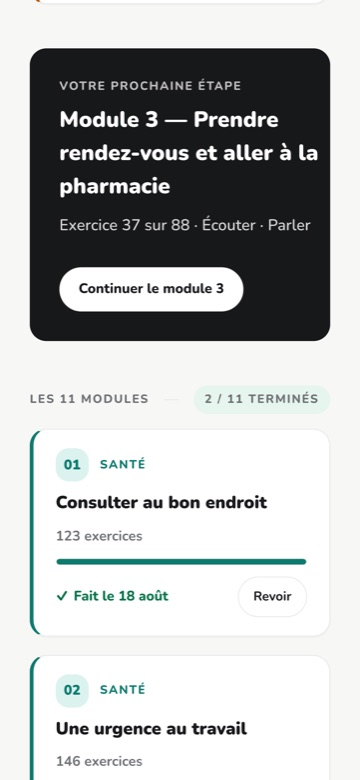

Celles qui viennent vraiment, dans l'ordre où elles viennent. Elles ne sont pas à désamorcer d'avance : les poser soi-même, avant que la salle les pose, est ce qui fait qu'on y répond calmement.
7 minutes
Annexe. Deux usages : la relire seul avant la rencontre, ou la projeter si la salle part dans les questions plus tôt que prévu.
COMMENT S'EN SERVIR
Poser l'objection avant que la salle la pose.
Une objection qu'on formule soi-même se répond ; une objection qu'on subit se défend. Les sept qui suivent ont toutes été entendues en salle — aucune n'est inventée pour la forme.
Ne pas projeter les sept d'affilée : c'est une réserve, pas un chapitre. On y va chercher celle qui vient de tomber.
CE QU'ON ENTEND
« Nous ne voulons pas d'intelligence artificielle avec nos élèves. »
Alors ne l'ouvrez pas.
C'est un réglage, pas une négociation : le centre le pose une fois, et les 87 modules se replient. Le même fichier, sans l'assistant.
Réponse complète, telle qu'elle est dans la trousse :
C'est un réglage, pas une négociation. Le centre le pose une fois sur l'arbre des organisations et les 87 modules se replient : plus de rail d'outils, plus de correction avant l'envoi, la réponse attendue après deux essais. Les dialogues, les exercices, les mini-leçons ne bougent pas — ils ne dépendent d'aucun modèle. Le montrer plutôt que le dire : c'est la paire d'écrans 07 et 08 des captures.
LA PREUVE
Le module, assistance fermée
Alors ne l'ouvrez pas.
À projeter juste après la réponse, sans commenter. Une objection tombe mieux devant un écran que devant une phrase.
CE QU'ON ENTEND
« Où sont hébergées les données ? Faut-il que ce soit au Québec ? »
Rien d'identifiant n'a besoin d'exister.
En mode séance, l'élève n'a ni compte, ni pseudonyme, ni trace qui lui survive à la soirée. La question de l'hébergement se pose alors sur du vide.
Réponse complète, telle qu'elle est dans la trousse :
Non, et il y a trois conditions — elles sont écrites dans le guide pour la direction. Dire aussi ce qui n'est jamais gardé : les corrections de l'assistant s'affichent et ne s'écrivent nulle part, et le registre des appels compte des jetons sans jamais garder un texte.
LA PREUVE
Une classe entière, sans un compte
Rien d'identifiant n'a besoin d'exister.
À projeter juste après la réponse, sans commenter. Une objection tombe mieux devant un écran que devant une phrase.
CE QU'ON ENTEND
« Il faut créer des comptes pour tous nos élèves ? »
Non. Une feuille photocopiée suffit.
Un code à six caractères, un code QR, et la classe travaille. Le suivi de l'enseignant est exactement le même écran.
Réponse complète, telle qu'elle est dans la trousse :
Pas nécessairement. Le mode séance ouvre une classe avec une feuille photocopiée et un code de six caractères : aucun compte, aucun pseudonyme, aucune donnée identifiante — et l'enseignant a quand même son tableau, participant par participant.
LA PREUVE
Ce qu'on photocopie
Non. Une feuille photocopiée suffit.
À projeter juste après la réponse, sans commenter. Une objection tombe mieux devant un écran que devant une phrase.
CE QU'ON ENTEND
« Combien ça coûte ? »
Ce qu'on mesure, pas ce qu'on estime.
Chaque appel à un modèle est inscrit dans un registre, avec ses jetons. Un centre qui ferme l'assistant ne paie plus rien à l'usage.
Réponse complète, telle qu'elle est dans la trousse :
Le coût réel par élève et par module est dans « Le prix d'un module », avec la part qui vient des appels aux modèles. Un centre qui ferme l'assistant ne paie plus rien à l'usage : les voix sont enregistrées d'avance et les exercices se corrigent sur l'appareil.
CE QU'ON ENTEND
« Est-ce que ça remplace l'enseignant ? »
Il n'y a pas de cours sans lui.
C'est l'enseignant qui ouvre un module, qui décide de la séance, qui lit les productions. Rien ne s'ouvre tout seul à un élève.
Réponse complète, telle qu'elle est dans la trousse :
Non, et le matériel le prouve mieux qu'un discours : 1 264 diaporamas de séance avec 12 524 notes de présentateur, c'est-à-dire 1 518 heures de classe à donner. L'outil prépare, il ne fait pas le cours.
CE QU'ON ENTEND
« Qui a écrit le contenu ? »
Un enseignant de francisation.
Le contenu est écrit à partir du programme du Ministère, situation par situation — jamais recopié d'un manuel existant.
Réponse complète, telle qu'elle est dans la trousse :
Nous. Chaque module part du programme d'études, avec sa situation de vie, ses intentions de communication et ses savoirs — rien n'est recopié d'un manuel. C'est ce qui permet d'y toucher : un module qui ne convient pas se réécrit.
CE QU'ON ENTEND
« Nos élèves n'ont pas d'ordinateur. »
Le cours entier se fait sur un téléphone.
Les sept familles d'exercices, l'enregistrement de la voix, le dépôt d'un texte. Et la fiche papier existe pour ceux qui n'ont rien.
Réponse complète, telle qu'elle est dans la trousse :
Ils ont un téléphone, et c'est le cas d'usage principal, pas une adaptation : barre d'outils en bas de l'écran, banc de réponses sous le pouce, glisser-déposer au doigt. Aucune application à installer, aucun compte d'App Store.
LA PREUVE
Le cours entier, sur un téléphone
Le cours entier se fait sur un téléphone.

À projeter juste après la réponse, sans commenter. Une objection tombe mieux devant un écran que devant une phrase.
POUR FINIR
Une objection qui ne vient pas est une objection qui n'a pas été dite. Demander : « qu'est-ce qui vous ferait dire non ? »
Les sept réponses complètes sont dans la trousse.
Elles se relisent en cinq minutes, avant d'entrer.
La vraie question de fin. Une salle silencieuse n'est pas une salle convaincue.